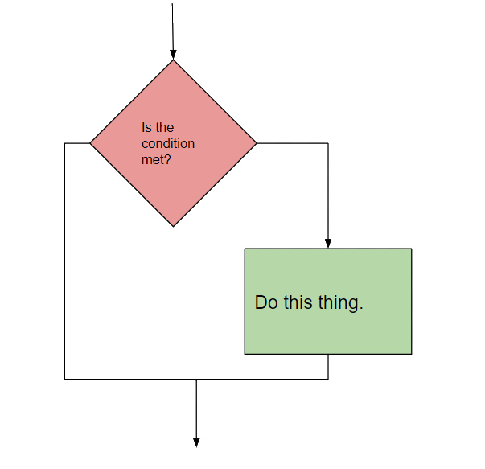
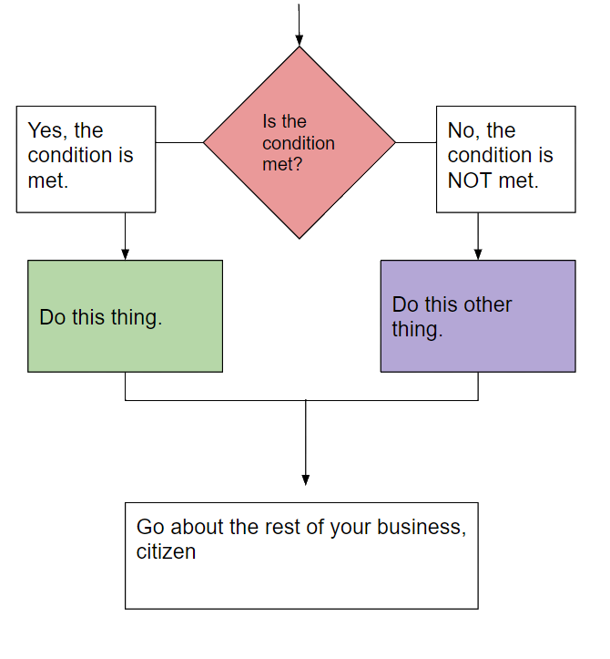
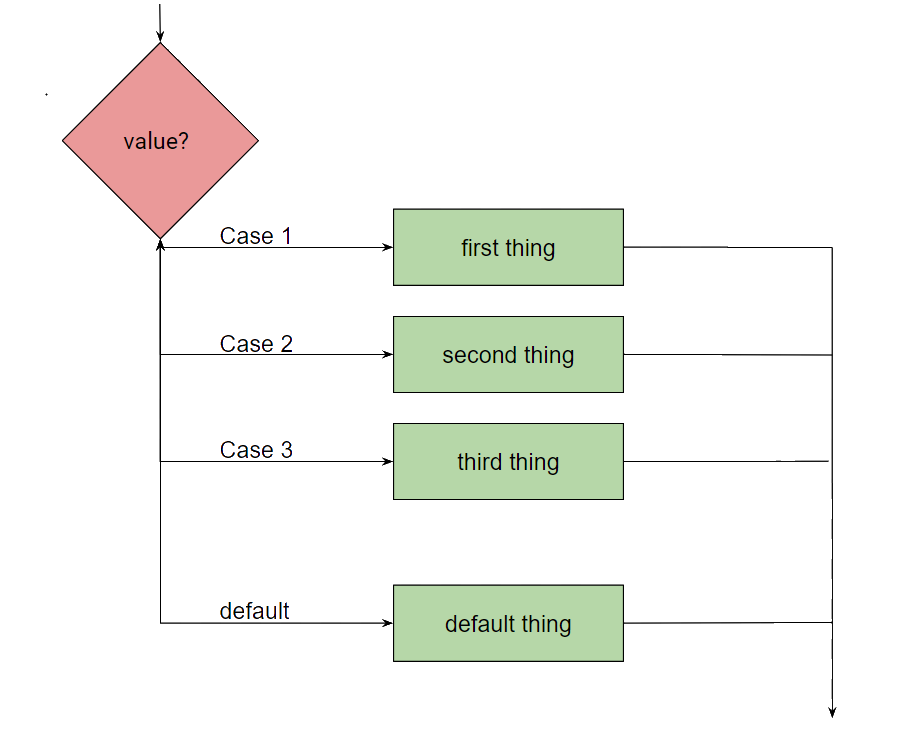
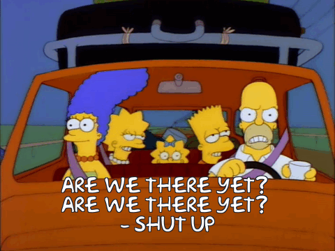
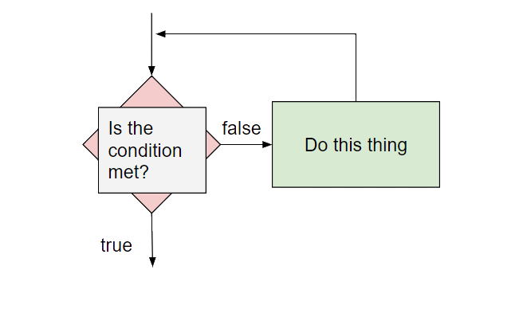
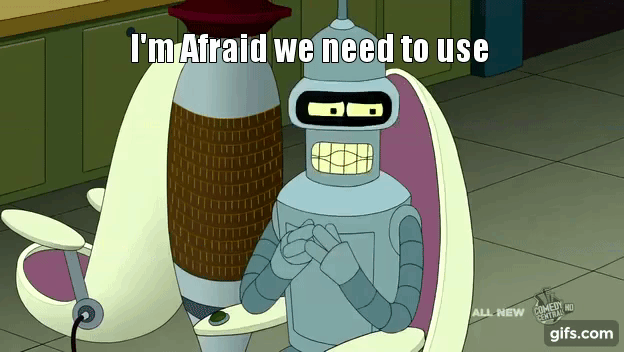
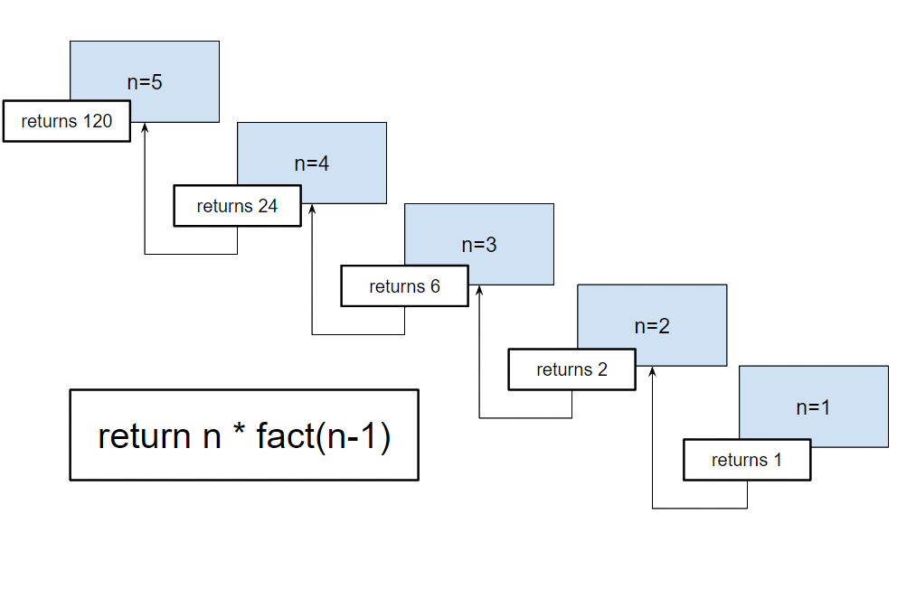

Decisions & loops
Should I stay or should I go now?
In the programming world there are--essentially--three different types of 'structures' and all logic problems in programming can be solved with algorithms using these three structures, which can be combined in an infinite number of ways.
The past few lessons, we've been hanging out with 'sequence' structures, specifically, functions and/or methods. Sequence structures are actions or events that lead to other actions or events. I call a function, that function executes, each line in the code block executes sequentially, and a result is returned (maybe). There can be any number of actions or events in the sequence, but each action or event must execute with no possibility of skipping or branching.
Selection / decision
The second structure on our whirlwind tour of JavaScript programming is the 'selection' structure. You might also see them referred to as 'decision' structures or 'conditional' structures, but regardless of whatever alias they happen to be going by, the song remains the same.
In a selection structure, a question is asked and--depending on the answer--the program chooses a 'path,' or course of action, to take. Once the decision has been made, the program goes back to business as usual. Sometimes that question is something simple like 'has a button been pressed?' If that condition has been met, do that thing you're supposed to do when the button is pressed. The flow chart logic looks a bit like this:

Sometimes you might have two options. This is called a binary decision, which looks like this:

If / else
Our mechanism for handling conditional statements in JavaScript is the if/else statement. There are, of course, others, but this one is the most common, so, we're going to start there.
var hour = new Date().getHours(); if (hour < 18) { greeting = "Good day"; } else { greeting = "Good evening"; } document.getElementById("example").innerHTML = greeting;
As previously mentioned, JavaScript has a number of really useful built-in methods. One of those functions queries the system for the time. Using that method, I can write code that will output a specific and particular greeting based on the time of day. It's not really all that complicated, but it adds a nice, friendly touch to your interface, if that's the kind of thing for which you're looking. As usual, let's parse this out a bit:
- 'if' is our keyword. This starts the conditional statement.
- '(hour < 18)' is our condition to test. 'hour' is the variable in which we're storing the result of the built-in method I mentioned up above. The Date().getHours() methods return a value in the range of 0-23, which I can then use for my comparison. The block of code inside the curly brackets is what I want to do if the condition evalutates to true. If the time returned is of a value less than 18 (or six o'clock), my condition is 'truthy,' and, consequently, my greeting is set to 'Good day.'
- 'else' is also a keyword and extends the 'if' statement. The condition isn't always going to evaluate to true, which means you have to have some alternative block of code to execute. I've set this up as a binary statement, it's either before six o'clock or it isn't, so, if the 'if' statement evalutates to false, I'm going to simply set the greeting to 'Good evening.'
- I then take that greeting and--for now--simply output it to an element on the page with the id of 'example'.
Binary decisions are great, but the world isn't made up exclusively of binary decisions is it? Sometimes we want options to help label and define the space between the absolutes of the world. To that end we're going to make a small modification to the code to make it a bit more specific and useful. We're going to add an additional test statement using the keyword 'else if'.
var hour = new Date().getHours(); if (time < 10) { greeting = "Good morning"; } else if (time < 16) { greeting = "Good afternoon"; } else { greeting = "Good evening"; } document.getElementById("example").innerHTML = greeting;
No need to parse this one out as I'm not doing anything special with it. I'm modifying the first condition and then adding a second condition to my series of conditions to test.
There are a few things to keep in mind when dealing with selection statements and conditions.
- You can have as many testing conditions and statements as you like. You can add 'else if' statements all the way down, but you need to understand that all paths are mutually exclusive. "Two roads diverged in a yellow wood, and sorry I could not travel both...." and all that. Each of these conditions represents a potential path that our program logic may travel, but it can only travel the one path--whatever the path. Once the decision has been made, the only way to take a different option is to reinitialize the selection statement.
- Like with arrays and functions, you can nest selection statements indefinitely. You can have if/else statements inside if/else statements inside if/else statements inside...well, you get the point. Keep in mind, however, that it increases overall complexity and lowers readability (for most of us). It's hard enough to follow the data through a program most days, but you start wrapping if/else statements inside if/else statements and you've added a whole other level of difficulty to overcome.
- Most of the work of the condition statement is going to be done using comparison operators and there will be instances where you want your evaluation to test not just for one condition, but multiple conditions. Does the statement evaluate true if this condition and this other condition are met? Does the statement evaluate true if this condition or this other condition are met? In those instances we'd use logical operators, which we'll talk of in just moment.
- Technically, you do not need an else statement after an else if statement--if it's included. I'm of the opinion, however, that it's always best to cover as much of yourself as you can and that means--to me anyway--adding an else statement to catch anything that might slip through the cracks whenever I can. It adds a bit of overhead and bloat to the code, but better to be prepared than caught off guard, again, in my opinion.
Honorable mention: the switch statement
So, what do you do if you have multiple options and you don't want to bother with nested if/else selection statements? JavaScript provides another selection statement called the switch statement, but you might also see them referred to as case statements. They're structured a bit differently and are used with a slightly different purpose, or focus. In these instances, we're not so much asking a yes/no question, but more like asking for a value and then comparing that value against a list of predefined values, or 'cases' for a match to determine the path. On the off chance that the value, or expression provided doesn't match any of our predefined values, we must include a default case, which enables us to 'break' out of the condtional statement and keep the program running along .

As example...
switch (new Date().getDay()) { case 0: day = "Sunday"; break; case 1: day = "Monday"; break; case 2: day = "Tuesday"; break; case 3: day = "Wednesday"; break; case 4: day = "Thursday"; break; case 5: day = "Friday"; break; case 6: day = "Saturday"; }
We're going to use the Date() again, but this time we're going to extend that method to get the day of the week using the getDay().
- 'switch' is our keyword. The content of the parenthesis that follow will be our expression to evaluate. In this case, I'm polling the system to get the date and return the numeric value of the current day of the week (e.g. 0 for Sunday--as arrays start at index 0, 1 for Monday, 2 for Tuesday, etc.).
- The program takes that value and then compares it with a series of 'case' statements. Once a match is found the associated block of code will execute, setting the variable 'day' to the appropriate value.
- After the code block is executed, the program will 'break' out of the switch block and carry on with any attached, or following code.
There is something I kind of want to mention here real quick that is kind of important. This particular program doesn't require a 'default' statement. Since I'm polling the system and the system always provides exactly what I'm looking for, I know that the returned value from my getDay() is always, always, always going to be a number in the range of 0-6. Consequently, I don't need a default statement to handle input values outside that range, right? Users are unreliable, at best, and malicious, at worst. If I were polling the user to provide that data, chances are, at some point with one of them, I would get an unworkable value, right? When I got that unworkable value, I would have to have some mechanism in place to deal with that lest the program crash horrifically. This means I need a default statement to handle any instances where the result of the evaluated expression does not match any supplied case statement. If you're feeling particularly careful (i.e. paranoid), you might want to include a default statement no matter what and while it is encouraged to use them, especially if the source of your data is 'unreliable,' they are not required programmatically.
If the code block to execute is the same for more than one case statement, you can stack case statements accordingly to reflect that.
switch (new Date().getDay()) { case 0: case 6: day = "weekend"; break; case 1: day = "Monday"; break; case 2: day = "Tuesday"; break; case 3: day = "Wednesday"; break; case 4: day = "Thursday"; break; case 5: day = "Friday"; break; }
Iteration / looping
The last stop on our programming structure tour is the iteration, or looping structure. Much like a selection statement, the program will ask a question and compare the result to a predefined condition. If that condition is not met, the program executes an operation, or series of operations, and then loops back around to ask the question again, which it will do in perpetuity until the condition is met or your system sets itself on fire, whichever comes first. Each pass through the code block is called a loop, or iteration. Loops are the programming equivalent of 'are we there yet?'

Iteration is one of the more powerful concepts in programming and, truth be told, probably one of the more difficult concepts to master, even if the idea is a relatively simple one. It's an incredibly versatile and powerful tool, however, and while you might not have a lot of need for it on the front end of things, it's a nice tool to have should those needs change. If we take a look at a flow chart example of the logic, you'll see that the basic structure of a loop isn't terribly complicated.

So, let's look at iteration using an example that you would never use in real life.
Let's say you want to print out the numbers 1-10 in sequence one after another. Again, not that you'd need to do this in real life, but it is just the kind of tedious, mind-numbing operation for which loops are made. Using a basic output statement it might look something like this.
document.getElementById("example").innerHTML = 1; document.getElementById("example").innerHTML += 2; document.getElementById("example").innerHTML += 3; document.getElementById("example").innerHTML += 4; document.getElementById("example").innerHTML += 5; document.getElementById("example").innerHTML += 6; document.getElementById("example").innerHTML += 7; document.getElementById("example").innerHTML += 8; document.getElementById("example").innerHTML += 9; document.getElementById("example").innerHTML += 10;
Kind of repetitive, right? To be honest, it was kind of tedious just typing all that out. I thought real hard about not even finishing it and going with an 'etc. etc.' instead. I did, however, finish it, which, I think, is a testament to my personal character and dedication to you.
In any event, if you had to code something like this and then had to do it each and every time you wanted to print the numbers 1-10 in sequence, it might drive you crazy, you might make a mistake (meaning you'd have to spend time hunting it down and fixing it), and you'd probably be looking for a new job at the end of the day. Computers, however, are very good at this stuff. They love it, if, in fact, they could love. To help faciliate that love (and prevent us from checking the classifieds) we're going to take that operation and wrap it in some iteration, specifically, a 'for' loop.
for loop
'for' loops are one of more common loop variations found across multiple programming languages. They are a count-controlled loop, which means we use a programmatic counter to keep track of how many times it iterates through the code. This is important because as a loop is meant to run over and over and over again, there has to be some mechanism in place that forces the loop to 'break.' This mechanism is the conditional, which is why the initalization statement is considered part of the conditional. If the condition is never met and the program doesn't have a way to escape the iterative sequence, then the loop runs indefinitely--at least, on paper. In reality, it crashes the program or locks up the system, which irritates and frustrates the user. While there may be variations on a theme across those programming languages as it relates to for loops, the basic theory and syntax are--essentially--the same.
I want to use a for loop when I know--for the most part--how many times I'm going to have to loop through the operation. In the above example, I know that I'm going to want to iterate through that specific line of code 10 times to get my desired result, so, I use a for loop as it is the most semantically appropriate. I should mention that 'known' is kind of a misnomer here. In the example, I know how many passes I'm going to make through the loop because I have explicitly defined it at '10.' However, there will be instances where I might not be able to explictly define that value. Let's say, for instance, part of a program I want to create prints out a current list of students for one of my classes. My roster is--most likely--going to be in an array and that array is going to change sizes depending on a number of external factors that I won't know beforehand when I'm initially writing the program. I can, however, programmatically determine the length of that array using the len(), which means I do kind of 'know' when the program runs how many times I'm going to iterate over that array, which means I would probably use a for loop.
for (i=1; i <= 10; i++) { document.getElementById("example").innerHTML += i +"<br/>"; };
We've got some new stuff there, so, let's do 'the usual' and parse this out bit by bit.
- 'for' is our--you guesesed it--keyword.
- In the parenthesis is our conditional statement and it comes in three parts:
- 'i=1;' is our initialization statement. This is the counter part of our count-controlled loop. You can set this counter to any number you want. I'm setting it to '1' because I'm going to do something kind of clever with it later on. As we successively pass through the loop, our counter will increment to reflect each iteration.
- 'i <= 10' is the evaluative part of our conditional statement. While this condition is true, the loop will continue to execute.
- 'i++' is our iterative, or increment. JavaScript lets us abbreviate the operation 'i = i+1' to 'i++' In this for loop I only want to increment the counter by 1, but you can increment by any value you choose.
- The code block is--by this point--the standard run of the mill output statement--for the most part. Inside that <div> element I want to display the value for the variable 'i' Why would I want to do that? Well, my end result is going to be the numbers 1-10 shown sequentially as output. I kind of already have a value that will--conveniently enough--increment by 1 each time through the loop, so, I want to take advantage of that. By reusing an already existing variable value and operation, my code is less complex, less repetitive, and more condensed, or elegant. Each time through the loop, however, that output operation is going to overwrite the contents of my<div> element, which I don't want. To counter I'm going to instruct the interpreter to simply append the new value to the already existing value in the element with the '+=' operator. I then concatenate a <br/> element (remember innerHTML) to give the output a little visual separation.
The code will execute provided that 'i' is less than or equal to '10.' Once it reaches the value of '11', the loop will exit and any successive code will run as expected.
Special note: placement of the counter, condition, and increment statements is...'flexible.' JavaScript is incredibly lenient about position (or even their inclusion), which means you can set them just about anywhere in the code and they'll work. You'll see some of this later on when we talk of the other types of loops.
For your sanity--and my peace of mind--I'm going to recommend that you try to keep them all in that conditional statement when you can. It promotes readability, keeps your variables inside the local scope, and it translates well to how other programming languages handle syntax.
for / in loop
For / in loops work the same way as every other loop, but have a slightly different focus. For loops are used to iterate over data a determined, or known, number of times. For / in loops do the same, but for objects. Objects consist of properties and methods. Some of those properties and methods you might want to make available to other parts of your program or to other programmers, so, you set these properties and methods as enumerable, which--essentially--means you 'expose' them, or make them 'public.' The properties and methods can be accessed from outside the object through the defined interface.var student = {fName:"Tony", lName:"Stark", major:"Engineering"}; function studentRecord(student){ this.student = student; var i = 0 var output = " "; for (objectValue in student) { var objectKey = Object.keys(student); var objectValue; document.getElementById("example").innerHTML = output += objectKey[i] +": " + student[objectValue]+"<br/>"; i++; } } studentRecord(student);
Here I've created a public object called student. That object has a few properties and associated values. I'm using a loop inside a function to create a list of key:value pairs. 'For' every property 'in' the student object, I want it to get the property's name and the property's value and then output those key:value pairs in a relatively readable format.
fName: Tony lName: Stark major: Engineering
I have iterated over an object's enumerable properties to create a semi-readable list of those property names and property values.
I'm kind of way off the beaten path here, but we've only been looking--thus far--at relatively simple examples. JavaScript--for all its faults--is an incredibly powerful and deep language that's capable of doing...well, a lot. We're almost at the end of our foray into JavaScript, but understand that should you go further with this that the rabbit hole goes much, much deeper.
while loop
A for loop is going to run regardless of condition. We use them when we have a task that we absolutely, without a doubt know that we're going to have to run and, probably, run repeatedly. We throw it in a for loop and forget about it. It's a specialized construct and while it has a condtional statement, it's only there for control purposes. Under no circumstances will the condition be set so that the for loop doesn't run.
'While' loops are a bit different, even though the program flow, or logic, is--basically--the same. While loops are for code blocks that may or may not execute. The condition may be such that the while loop never executes when the program is run; the condition may be such that the while loop executes every time the program is run.
With the for loop the conditional is about exercising control. With the while loop it's about determining need. It fundamentally changes the question the developer has to ask from "how many times do I need to run this code" to "do I even need to run this code at all." It's a fine distinction, but a distinction nonetheless.
While loops are also useful in instances where you don't know exactly how many times the loop needs to execute. This is an especially helpful quality when user input is involved in setting the conditional statement.

It seems I'm on a bit of an animated gif kick today, I apologize. I also apologize for what's coming. I'll try to make it as painless as possible.
Let's say as part of a math-centric program, I have a bit that calculates the factorial of a number. A factorial--if you recall--is the result of multiplying a number and every positive, whole number before it in the sequence. So, if I want to determine the factorial of the number 5, I multiply 5 x 4 x 3 x 2 x 1, which equals 120. The factorial of 5 is 120.
My program, however, doesn't just determine the factorial of the number 5, but the factorial of all integer numbers. To add a bit of flexibility--or difficulty you might be thinking--I'm going to let the user input the number of which they want the factorial.
Technically, I know how many times the loop is going to run, so, I could use a for loop, but since the factorial part of my program is an optional part of the program, I'm going to use a while loop instead.
function factorial(){ var userInput = parseInt(prompt("Please input a number.")); var counter = userInput; var factorial = 1; while ( counter > 1 ) { factorial *= counter; counter--; document.getElementById("example").innerHTML = "The factorial of " + userInput + " is " + factorial } } factorial()
No need to parse it as there's nothing new here to see. Some of it's in different places, but there is nothing syntactically new. The last step in any factorial operation is to multiply the product--up to that point--by the number 1. This is my base case. It's something that happens every time regardless of the number input. The last step in determining the factorial of 3, 5, 96, or 2848 is to mulitply the running product by the value of 1. So, I set my initialization statement as 'counter = userInput'.
While factorial is less than the number input by the user, I want the loop to execute. Inside the loop, I set a running tab--of sorts--to keep track of the results of each multiplication operation through each iteration, or pass through the loop, and I decrement the counter by a value of 1. On the next to last pass the counter will be 1, the loop will output a statement that is displayed in the <div> element, the condition will reevaluate, will not be met, and the loop will stop running, leaving the last output statement in the element.
I also set that initialization statement outside the scope of the while loop. Truthfully, all of those variables have to be set outside the scope of the loop. As a bit of a thought exercise, you should totally try moving them inside the loop, run it, and then figure out why you get the results you get. The logic of iteration and looping can get quite...complicated at times. Working through problems like this helps build creative thinking and / or lateral thinking skills, which are invaluable to not just designers and developers, but to everyone in all walks of life.
do while loop
Similar to how the for / in loop is a variant of the for loop, the do while loop is a variant of the while loop, yes? There isn't a lot to say about the last stop at iteration station other than that the do while loop requires a bit of restructuring to work as you can see via the example provided below. Really the only significant difference between these two closely related constructs is that when using a do while loop the code block will always execute, at least, once. That is to say the code block will run and then the condition will be evaluated to determine whether or not the loop continues to execute.
function factorial(){ var userInput = parseInt(prompt("Please input a number.")); var counter = userInput; var factorial = 1; do { factorial *= counter; counter--; document.getElementById("example").innerHTML = "The factorial of " + userInput + " is " + factorial } while ( counter > 1 ); } factorial()
Break and continue
We've ran into the break statement before when talking of switch statements, but it's worth mentioning that break statements work in loops as well and--in a shocking turn of events for JavaScript--it works exactly the same way. If you want to break out of a loop entirely, just throw in a break statement. The loop will immediately stop and kick it out to the next chunk of code following the loop.
The continue statement breaks out of the current iteration. If a specified condition occurs, the continue statement will stop the current iteration and kick it back to the beginning of the loop for the next pass.
A final word on iteration
Programming is flexible. I believe I've said this before, but it bears repeating. In the world of programming there is no right answer there are only right answers. Developers all think differently from one another and we sometimes find solutions to problems in the weirdest of places. Your approach to a problem is different from my approach to a problem is different from some other person's approach to a problem and that's a good thing. It keeps it interesting.
Loops are versatile and which one you choose to use is almost entirely up to you as a developer. For, for / in, while, do while, they're all basically the same with small differences, right? If the structure and syntax of a for loop makes sense to you, then use a for loop and damn the consequences. You might irritate some, but any developer worth their salt understands that programming is an art in the same way that music, dancing, and painting are art. It manifests itself a bit differently, to be sure, but a well executed and well written page of code is comparable--in my opinion--to that lovely watercolor hanging on your doctor's waiting room wall or that little tune you hum to yourself while you're waiting on your coffee to brew.
Personally, I hate loops. They are--to me anyway--a necessary evil in which I have to dip my toe into from time to time. They confuse me, the logic is sometimes ellusive, and I will go to fantastic lengths to avoid using loops when I can. My brain doesn't operate that way and it irritates me a bit. So, in the interest of not ending this lecture on a sour note for me (and it's really all about me, isn't it? Isn't it?), we're going to talk about one last thing and then we'll part ways until another time.
Recursion
'Divide and conquer' is a very common technique used for problem solving in the programming world. Problems are solved by systematically breaking down the large, unmanageable problem that seems impossible to solve into smaller, more manageable problems that can be solved--typically with the same, or similar, approach.
For instance, let's say I'm in the very back row of a concert hall. I'm not allowed to leave my seat and I can only see the row that's immediately in front of me. This is a problem because I need to determine how many rows of seats are in this concert hall and I only get the one question before the usher comes over to kick me out.
I can totally do this by asking a very simple question: "Is there a row in front of you?" I know there's a guy in front of me, so, I ask that guy to repeat the question of the row in front of him, assuming there is a row in front of him. The guy in front of me, asks the guy in front of him, asks the gal in front of him, asks the guy in front of her, and so on until we get to the front of the concert hall where the last man standing (or sitting, in this case) informs the person behind them that there is, in fact, no one sitting in front of him. That guy is our base case. He returns a value of 'no rows,' the guy behind him returns a value of 1 row (the guy in front of him), the gal behind him returns a value of 2 rows (the 2 rows in front of her) and so on until it makes it's way back to you. You take that value and add 1 for the guy in front of you and 1 for the row that you're in and, suddenly, you've figured out how many rows of seats are in the concert hall. You've done what you needed to do and the usher isn't anywhere to be seen.
It works the same way in JavaScript, where recursion is, simply put, the ability to call a function or method from within itself.
As always, let's look at some code:
Important: Do not run this code as it will lock up your system something fierce.
function recursiveFunction() {
recursiveFunction()
}
recursiveFunction()
The function is invoked with the last line 'recursiveFunction()'. The function executes invoking the function 'recursiveFunction()', which executes invoking the function 'recursiveFunction()'
It seems counterintuitive, but this is recursion in JavaScript and one of the foundations of functional programming.
Let's look at our factorial code this time in a recursion-friendly format.
function testFunction(){ var number=parseInt(prompt("Please enter a number for the factorial:\n(decimal numbers will be rounded down.) ")); try{ var fact = function(n){ if(n===1) { return 1; } else { return n*fact(n-1); } } document.getElementById("example").innerHTML = "The factorial of " + number + " is " +fact(number) } catch(err) { alert("Please enter a whole, positive number.") testFunction() } } testFunction()
Can you figure out what's going on? It looks complicated, but it'll lie to you. I've got some error catching code there to ensure that the factorial code only runs if a number is input. I could break that down further to include a specific error message for decimal numbers, but decided a warning message in the prompt box was probably enough. I've also packaged the entire thing in a function, or method, wrapper of sorts to keep everything nice, organized, and all variables local. You might also notice that I have both a function expression and a function declaration. To avoid issues of scope (not there would be in such a simple method) it's best not to have function declarations inside other function declarations. This particular program works regardless, but my editor threw a warning and I--like the good, little programmer I am--listened.
- I'm gathering a number from the user and storing it in a variable named, number.
- I'm then outputting a statement where, in part of it, I pass that variable as an argument to a function called 'fact.'
- The fact() first checks to see if the value of n, which is the local copied value of the variable number gathered earlier, is equal to 1. If it is, it returns a value of 1. This is our base case, remember? The last mathematical operation in a factorial is always, always, always, multiplying the current product value by a value of 1.
- If n is not equal to 1, then it will return the result of the value of n multiplied by the result of the fact() where the argument passed is n-1.
If n == 5, then the returned value will be the result of 5 * fact(4) - It will continue to call separate instances of the fact() until the value of n == 1. That value will be returned to the most immediate instance of the fact() where n == 2. 1 is multiplied by 2 and then that value is passed back to the most immediate instance of fact() where n == 3. It will continue to do this until it reaches the original instance of the fact(). 1 x 2 x 3 x 4 x 5 = 120.
Here's a visual:

Looping and recursion are really two sides of the same coin (e.g. iteration). My brain digs recursion a bit more, so, for me, it's a bit easier to understand, but your mileage may vary. Again, programming is a highly personalized thing, right? As long as it works in the context it should, do it how you like to do it. Programming is hard enough without having to force yourself to think and code in ways that seem unnatural.
A final...final word on iteration
And that's it for iteration. Well...mostly.
In fact, we're largely done with JavaScript programming. Next time we'll talk about libraries and frameworks where we'll touch briefly on it and then we're finished.
Congrats on sticking it out this far. I've kind of veered off at times into proper programming territory far, far beyond what you need to understand as a new frontend developer. I hope--first off--that you've enjoyed. Programming has sort of become a bit of a passion of mine and the joy of being able to share that with others through this teaching gig has made a tremendous impact on my life even if, at times, I do it badly. Second, programming, or, at least, a basic understanding of programming theory has already become--and will continue to be--a huge part of all kinds of things across all kinds of careers across all kinds of disciplines, so, even if you decide that programming isn't for you, I hope the lessons learned here help in whatever path you walk.